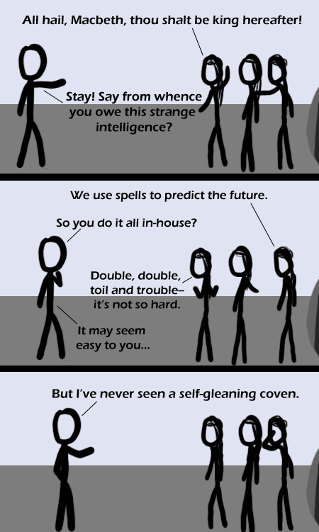

Comic JK 335
When I Feel Like It
⇤
<
?
>
⇥

⇤
<
?
>
⇥
Forum
.
RSS
.
Digg
.
Facebook
.
Reddit
.
Twitter
.
Stumbleupon
Enter your thoughts on number 335 here. Please, no spamming, trolling, phreaking or men of woman born. Aarrgghh! My Eyes! Shakespeare would approve. The man loved puns (or quibbles, as he would have called them). >yup. >>Round about the cauldron go; In the poisoned entrails throw. The word 'quibble' fails to appear in any of Shakespeare's works; nobody really uses it before the Restoration. Toad, that under cold stone Days and Nights has thirty-one Sweltered venom sleeping got, Boil thou first i' th' charmed pot. Let sit for 20 minutes and serve on some toasted bread. Hahahahaha nice one. > The queen that bore thee, Oftener upon her knees than on her feet Have to show this to my English teacher, we're doing Macbeth Whoever writes this comic needs to GET OUT OF MY HEAD. I'm having a bit of a Shakespeare obsession right now. >PONIEEEEEEEES! "When shall we three meet again? In thunder, lightning, or in rain?" "When the hurly-burly's done And after Coronation Street." >>that sounds familiar - pray tell, was that perchance a quotation from Benny Hill ? Shakespeare would approve of _good_ puns, not crappy ones. > Each pun is by default a good one. Henceforth there are no crappy puns, and "good pun" is a pleonasm. heh, I just got this. Sounds like self-cleaning oven. >good job! *brohoof* heres your cupcake. Brohoof... Okay, this MLP thing has officially gone too far.